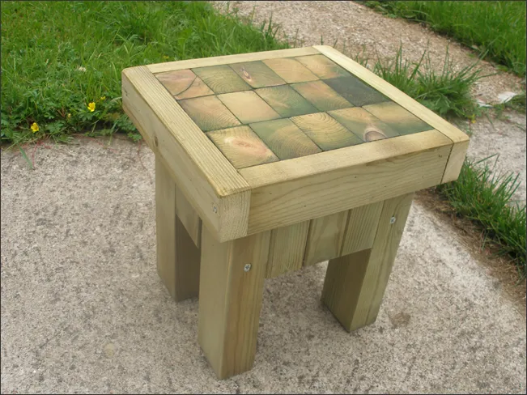
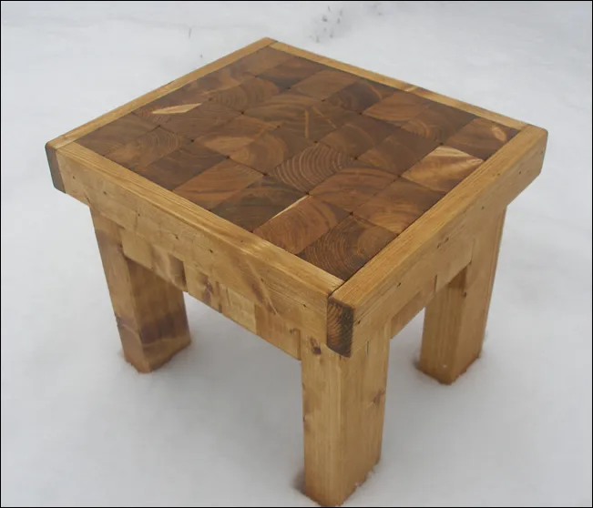
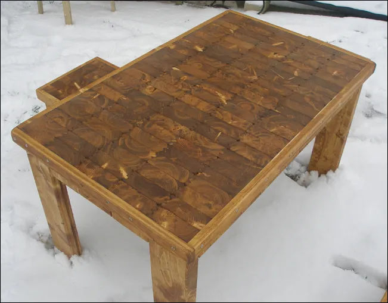

Valmistan aiamööblit lastele.
Viimistlus: immutatud puit (roheline) kui ka kõikvõimalikud teised viimistlusvariandid. Võimalik valmistada kliendile sobivates mõõtudes.
Antud komplekt on mõõtudes: laud - 940 mm (pikkus) x 520 mm (laius) x 550 mm (kõrgus). Taburet - 315 mm (pikkus) x 280 mm (laius) x 300 mm (kõrgus).





